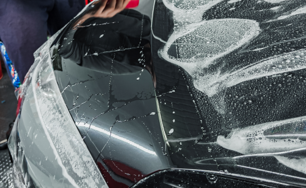

Оклейка полиуретановой пленкой
Оклейка
виниловой пленкой
Виниловая пленка применяется как для декорирования, так и для защиты кузова от внешнего воздействия. Она имеет широкий выбор цветовых фактур, бывает с глянцевой, матовой или металлической поверхностью.
Заказать WhatsAppОклейка
полиуретановой пленкой
Полиуретановая пленка — долговечная защита от механических повреждений. Данный материал устойчив к УФ-излучению. Защитные свойства сохраняются в течение всего эксплуатационного срока.
 Заказать WhatsAppОклейка
антигравийной пленкой
Антигравийная пленка — эффективный материал. Она используется для защиты кузова исключительно от камней, гравия и от коррозийного воздействия. Устанавливается в передней части кузова.
Заказать WhatsAppБрендирование авто
Брендирование автомобилей с помощью авто пленки - это эффективный способ привлечения внимания
к вашей компании и ее
продуктам или услугам. Авто пленка является универсальным решением для брендирования
автомобилей любых типов и моделей.
Автомобиль с вашим логотипом и контактной информацией может стать мобильной рекламной
площадкой, привлекающей внимание к
вашему бизнесу на дороге и на парковке.
Автопленка — не только красиво, но и функционально. Автомобильная пленка обеспечивает защиту
от абразивных материалов.
Она долговечна, и предотвращает повреждение ЛКП от УФ-излучения. Защищает лакокрасочное
покрытие от механических
повреждений.
Не знаете, что выбрать? Бесплатно поможем вам подобрать автомобильную пленку. Напишите нам,
и мы проконсультируем вас.
Вы получите персональную цену на автопленку для брендирования.
Оклейка камуфляжной пленкой
Для придания ЛКП текстуры камуфляжа применяется специальная пленка. Такая обработка обеспечивает защиту кузова. Но и позволяет изменить общий внешний вид транспортного средства.
-
Как производится поклейка в Jam Car:
- подготовка кузова. Поверхность тщательно очищается от грязи, пыли, жира. Если этого не сделать, не будет обеспечена адгезия. Кузов высушивается, проверяется на наличие повреждений;
- непосредственно оклейка. Для этого используем как ручные, так и автоматизированные средства. Мастера Jam Car равномерно распределяют пленку по поверхности. Это предотвращает появление пузырей и складок;
- обрезка автопленки и финишная обработка. Удаляем лишний материал, пузыри и складки, если они образовались.
Финальный этап — проверка результата. Персональная цена прямо сейчас. Звоните или пишите нам.
Заказать WhatsAppОклейка
крыши
авто
Заказать
WhatsApp
Оклейка крыши авто — возможность быстрого изменения внешнего вида. Но также установка автомобильной пленки обеспечит защиту от внешнего воздействия. Мастера Jam Car осуществляют оклейку в кратчайшие сроки.
-
Как происходит монтаж автопленки:
- подбирается вид пленки. Учитывая задачи, используем виниловую, антигравийную или полиуретановую пленку;
- подготовка поверхности к работе. Тщательно очищаем крышу от любых скоплений абразивов, устраняем повреждения. Поверхность должна быть идеальной;
- проводим замеры пленки, чтобы полностью покрыть крышу. Для нарезки используем полуавтоматизированное оборудование;
- наносим специальный клеящий состав;
- размещаем автомобильную пленку.
Этапы могут отличаться. Позвоните, и вы узнаете, как мы обработаем ваш автомобиль.
Оклейка
салона
авто
Заказать
WhatsApp
Оклейка салона авто — один из популярных способов изменения дизайна. Но автопленка не только видоизменяет, а и защищает автомобиль. Существует несколько видов пленок для обработки авто. Jam Car применяет антигравийную пленку, виниловую, с текстурой под карбон, с матовой поверхностью. Выбор зависит от предпочтений клиента.
-
Почему стоит заказать оклейку салона:
- защита от УФ-излучения и выгорания цвета;
- на элементах салона не будет скапливаться пыль и грязь;
- защита салона от появления потертостей, царапин.
Адаптивная цена. Она формируется под клиента. Обращайтесь, рассчитаем стоимость прямо сейчас.
Эксклюзивный дизайн
оклейка авто
Хотите индивидуальность? Обратите внимание на автомобильную пленку. Оклейка авто создает персональный внешний вид. С ее помощью вы поменяете изначальный цвет. Автопленка придаст уникальную текстуру. Он оклейка — не только красиво, но и практично. Комплексная оклейка защищает автомобиль. Автопленка создает слой, который “режет” УФ-излучения. Цвет машины не будет выгорать от солнца. Пленка предотвратит повреждения ЛКП от абразивных материалов. Надо разнообразить внешний вид? Хотите запустить брендированную рекламу? Или просто нужен эксклюзив? Тогда Jam Car — то, что вам надо. Мастера разработают персональный дизайн пленки под ключ.
Заказать WhatsApp